10 Análisis de estructuras
10.1 Introducción
La fiabilidad de un sistema se puede entender como la capacidad del sistema para llevar a cabo una determinada función, bajo unas condiciones experimentales dadas y durante un cierto periodo de tiempo. Esta definición implica una serie de conceptos que hay aclarar. En primer lugar, el analista debe tener claro cuál es el sistema.
Por sistema o estructura se entenderá una colección de elementos, que en lo sucesivo llamaremos componentes, ordenados según un diseño específico con el fin de cumplir aceptablemente determinadas funciones.
El objetivo principal de esta sección será el cálculo de la función de estructura, que determina el estado del sistema como una función de los estados de sus componentes. En otras palabras, procederemos a la construcción de un modelo que represente el tiempo de funcionamiento de un sistema basado en las distribuciones de tiempo de funcionamiento de las unidades que lo componen.
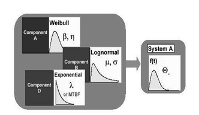
El número y el tipo de unidades dentro del sistema físico que seleccionamos como componentes en nuestra representación estructural del sistema puede venir limitado por una serie de factores. Otra cuestión fundamental que hay que tener en cuenta a la hora de construir la función de estructura de un sistema son las relaciones de tipo lógico que guardan entre sí las componentes y también con el propio sistema. Por un lado, en general, salvo que indiquemos otra cosa, supondremos que las componentes funcionan de manera independiente unas de otras. Por otro lado, se supone que el estado de las componentes determina el estado del sistema, sin embargo esto no significa que afirmaciones como las siguientes sean ciertas:
Si las componentes de un sistema son fiables al 90%, entonces el sistema es fiable al 90%.
Una cadena es al menos tan fuerte, por tanto tan fiable, como su eslabón más débil.
El modo en que el estado y, por tanto, la fiabilidad de cada componente repercute en el sistema, es una información que queda recogida en la función de estructura, es decir representa aquellas relaciones determinísticas entre un sistema y sus componentes.
Comenzamos el análisis desde un punto de vista estático y determinístico, es decir, por un lado, se considera un sistema en un instante de tiempo fijo, de modo que el estado actual del sistema viene determinado por los estados actuales de sus componentes, sin tener, por tanto, en cuenta la evolución de las componentes y por consiguiente del sistema, a lo largo del tiempo.
10.2 Conceptos básicos
Se distingue únicamente entre dos estados: funcionamiento y fallo. Esta dicotomía se aplica tanto al sistema como a cada una de sus componentes. Para indicar el estado de la \(i\)-ésima componente, asignamos una variable indicadora \(x_{i}\) a dicha componente \[ x_i = \begin{cases} 1 & \text{si la componente } i \text{ está funcionando} \\ 0 & \text{si la componente } i \text{ no está funcionando} \end{cases} \] para \(i\in\{1,\dotsc,n\}\), donde \(n\) es el número de componentes al que nos referimos como orden del sistema. A partir de aquí se construye lo que vamos a llamar el vector estado del sistema, \(x = (x_1,x_2,\dotsc,x_n)\). El número total de posibilidades para el vector estado es de \(2^n\).
De la misma forma, se define la variable binaria \(\phi\) para indicar el estado del sistema \[ \phi = \begin{cases} 1 & \text{si el sistema está funcionando}\\ 0 & \text{si el sistema ha fallado} \end{cases} \]
En realidad podemos escribir \(\phi=\phi(x)\). La función \(\phi(x)\) se llama función de estructura del sistema.
10.2.1 Ejemplo: Sistema en serie
Consideremos un sistema formado por 2 componentes cuya lógica es la siguiente: el sistema funciona si todas sus componentes están en funcionamiento. El siguiente cuadro representa todas las posibilidades para el vector estado y en cada caso el valor de la función estructura
| \(x_1\) | \(x_2\) | \(\phi(x_1,x_2)\) |
|---|---|---|
| 0 | 0 | 0 |
| 1 | 0 | 0 |
| 0 | 1 | 0 |
| 1 | 1 | 1 |
A partir de este cuadro puede representarse la función de estructura mediante la siguiente expresión \[ \phi(x)=\min\{x_1,x_2\}, \] y dado que los posibles valores de las variables \(x_i\) son únicamente 0 y 1, la expresión anterior es equivalente a la siguiente \[ \phi(x)=x_1\cdot x_2. \]
La manera más usual de representar gráficamente un sistema en serie es mediante lo que llamaremos un diagrama de fiabilidad y, que en este caso es el siguiente
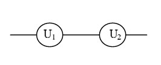
Este caso puede extenderse fácilmente si consideramos \(n\) unidades en el sistema. En general, la función de estructura de un sistema en serie de orden \(n\) puede expresarse \[ \phi(x)=\min\{x_1,\dotsc,x_n\}, \]
o bien \[ \phi(x)=\displaystyle\prod_{i=1}^{n} x_i. \]
Nota: La expresión algebraica de la función de estructura de un sistema no es única, en general.
10.2.2 Ejemplo: Sistema en paralelo
Consideremos ahora un sistema de orden 2 que funciona siempre que haya alguna de sus componentes en funcionamiento. En este caso, las posibilidades para el vector estado y la función estructura quedan recogidas a continuación
| \(x_1\) | \(x_2\) | \(\phi(x_1,x_2)\) |
|---|---|---|
| 0 | 0 | 0 |
| 1 | 0 | 1 |
| 0 | 1 | 1 |
| 1 | 1 | 1 |
A partir de aquí, se obtienen las siguientes expresiones equivalentes para la función de estructura correspondiente \[ \phi(x)=\max\{x_1,x_2\}, \] y \[ \phi(x)=1-(1-x_1)\cdot(1-x_2). \]
Este sistema se representa usualmente en la forma
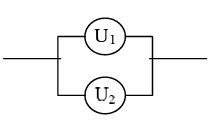
En el caso general de \(n\) unidades \[ \phi(x)=\max\{x_1,\dotsc,x_n\}, \]
o bien \[ \phi(x)=1-\displaystyle\prod_{i=1}^{n} (1-x_i). \]
Por comodidad en la notación, usaremos el símbolo \(\coprod\) para representar la operación de la última expresión, es decir
\[ \phi(x) = 1-\displaystyle\prod_{i=1}^{n} (1-x_i) = \displaystyle\coprod_{i=1}^{n} x_i. \]
10.2.3 Ejemplo: Sistema \(k/n\)
Se trata de un sistema que funciona siempre que haya \(k\) o más componentes funcionando, evidentemente \(1\leq k\leq n\). Como casos particulares, un sistema \(1/n\) es un sistema en serie, mientras que un sistema \(n/n\) es un sistema en paralelo. En este caso, una manera de representar la función de estructura es la siguiente
\[ \phi(\mathbf{x}) = \begin{cases} 1 & \text{si } \mathbf{x}\cdot\mathbf{1} \geq k \\ 0 & \text{si } \mathbf{x}\cdot\mathbf{1} < k \end{cases} \]
donde \(\textbf{1}=(1,1,\dotsc,1)^t\in\mathbb{R}^{n}\).
Se dice que una componente \(i\), es irrelevante al sistema si la función de estructura es constante en \(x_i\), es decir: \(\phi(1_i;x)=\phi(0_i;x)\) para todo \((·_i;x)\). En otro caso, la \(i\)-ésima componente es relevante al sistema.
Como ejemplo, observemos el siguiente diagrama de fiabilidad
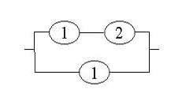
La componente 2 resulta irrelevante al funcionamiento del sistema.
Un sistema con función de estructura \(\phi(x)\) se dice monótono, si satisface las siguientes condiciones
\(\phi(0,0,....,0)=0, \ \phi(1,1,....,1)=1\).
si $ < $, entonces \(\phi(\textbf{x}) \leq\phi(\textbf{y})\).
Esta definición establece que el estado de un sistema monótono no puede empeorarse si el estado de cualquiera de sus componentes ha sido mejorado; además el sistema falla si todas sus componentes han fallado y está operativo si todas sus componentes lo están.
Un sistema o estructura se dice coherente, si es monótono y no tiene componentes irrelevantes.
La obtención de la función de estructura de un sistema coherente, puede simplificarse eligiendo un elemento pivote, por ejemplo la componente \(i\)-ésima, y usando la siguiente identidad, cuya validez es fácil de verificar,
\[ \phi(\textbf{x})=x_i\cdot\phi((1_i;\textbf{x}))+(1-x_i)\cdot\phi((0_i;\textbf{x})) \]
donde
\[ (1_i;\textbf{x})=(x_1,x_2,\dotsc,x_{i-1},1,x_{i+1},\dotsc,x_n) \] es un vector estado en el que la componente \(i\)-ésima está operativa y
\[ (0_i;\textbf{x})=(x_1,x_2,\dotsc,x_{i-1},0,x_{i+1},\dotsc,x_n) \]
es un vector estado en el que la componente \(i\)-ésima está fuera de servicio.
Estructura dual. Dado un sistema con función de estructura \(\phi\) se define su dual como aquel que tiene la siguiente función de estructura
\[ \phi^D(\textbf{x})=1-\phi(\textbf{1}-\textbf{x}) \]
Es fácil comprobar que un sistema en serie de orden \(n\) y un sistema en paralelo de orden \(n\) son estructuras duales.
Descomposición modular. El análisis de fiabilidad de un sistema se simplifica si el sistema se puede particionar en subsistemas que actúan cada uno de ellos como una componente. Tales subsistemas se llaman módulos y la función de estructura del sistema se puede obtener de la siguiente forma. Sea \(S=\{1,2,...,n\}\), se supone un sistema de orden \(n\). Sea una partición de \(S\), es decir \(S=\bigcup_{i=1}^m M_i\), con \(M_i\cap M_j =\emptyset\) para \(i\neq j\). Sea \(x^{M_i}=(x_j;j\in M_i)\) y \(\phi_i(x^{M_i})\) una función binaria monótona definida sobre \(x^{M_i}\), que vale 1 si el módulo \(M_i\) funciona y 0 en otro caso. La función de estructura del sistema se puede escribir
\[ \phi(\textbf{x})=s(\phi_1(\textbf{x}^{M_1}),\phi_2(\textbf{x}^{M_2}),\dotsc,\phi_m(\textbf{x}^{M_m})) \] donde \(s\) se llama función organizadora de la estructura del sistema.
Como ejemplo, calculemos, mediante una descomposición modular, la función de estructura del siguiente sistema
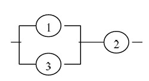
Agrupamos las componentes definiendo los módulos \(M_1=\{1,3\}\) y \(M_2=\{2\}\). Con esto el sistema se reduce a
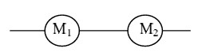
La función de estructura en este caso sería \[ \phi(\textbf{x})=s(\phi_1(\textbf{x}^{M_1}),\phi_2(\textbf{x}^{M_2}))=\phi_1(\textbf{x}^{M_1})\cdot\phi_2(\textbf{x}^{M_2}) \]
Con lo que el problema se ha reducido a calcular las estructuras de composiciones más simples. \(M_1\) es un subsistema con estructura en paralelo, con lo cual
\[ \phi_1(\textbf{x}^{M_1})=1-(1-x_1)\cdot(1-x_3) \]
mientras que \(M_2\) es un sistema unitario, con lo que el resultado final es
\[ \phi(\textbf{x})=(1-(1-x_1)\cdot(1-x_3))\cdot x_2 \]
Camino. Un vector estado \(\textbf{x}\) se dice un vector camino si \(\phi(\textbf{x})= 1\), es decir si la configuración dada por \(\textbf{x}\) implica el funcionamiento del sistema. El conjunto de componentes activas en un vector camino, \(A(\textbf{x})=\{i: x_i=1\}\), se llama conjunto camino. Si además \(\phi(\textbf{y})= 0\) para todo \(\textbf{y}<\textbf{x}\), entonces \(\textbf{x}\) se llama un vector camino minimo, y el correspondiente \(A(\textbf{x})\) se llama conjunto camino minimal, y representa el menor conjunto de elementos cuyo funcionamiento asegura el funcionamiento del sistema.
Nota: El funcionamiento de todas las unidades en al menos un conjunto camino minimal implica el funcionamiento del sistema. Como consecuencia se puede representar cualquier sistema coherente como una conexión en paralelo de sistemas en serie, cada uno de ellos formado por un conjunto camino minimal. Explícitamente tenemos,
\[ \phi(\textbf{x})=\displaystyle\coprod_{j=1}^{m}\displaystyle\prod_{i\in A_j} x_i \]
donde \(A_1, \ A_2, \dotsc, A_m\) son todos los conjuntos camino minimales del sistema.
Corte. Un vector estado \(\textbf{x}\) se dice que es un vector de corte si \(\phi(\textbf{x})= 0\), es decir, si la configuración dada por \(\textbf{x}\) conlleva el fallo del sistema. En este caso, el conjunto de componentes inactivas en \(\textbf{x}\), \(C(\textbf{x})=\{i: x_i=0\}\) se llama conjunto de corte. Si \(\phi(\textbf{y})= 1\) para todo \(\textbf{y}>\textbf{x}\), entonces \(\textbf{x}\) es un vector de corte minimal y el correspondiente \(C(\textbf{x})\) es lo que se llama conjunto de corte mínimo, y representa el menor conjunto de componentes cuyo fallo causa el fallo del sistema.
Nota: El funcionamiento de al menos una unidad en todos los conjuntos de corte minimal asegura el funcionamiento del sistema. Por lo tanto, se puede representar cualquier sistema coherente como una conexión en serie de estructuras en paralelo, cada uno de ellos formado por un conjunto de corte mínimo. En este caso, si disponemos de todos los conjuntos de corte minimal \(C_1, \ C_2, \dotsc, C_r\), tenemos
\[ \phi(\textbf{x})=\displaystyle\prod_{k=1}^{r}\displaystyle\coprod_{l\in C_k} x_l \]
10.3 Representación gráfica de la lógica de un sistema
Existen diferentes maneras de representar gráficamente las relaciones lógicas entre las componentes de un sistema y con el propio sistema que facilitan el cálculo de la fiabilidad.
10.3.1 Diagramas de bloque (RBD)
Constituyen la forma más natural de representación gráfica ya que son la más próxima al esquema funcional del sistema.
Cada bloque del diagrama representa un elemento (material o suceso) o una función. Aquellos bloques cuyo fallo implica el fallo del sistema se colocan en serie, mientras que aquellos bloques cuyo fallo no implica el fallo del sistema salvo en combinación con otros bloques se sitúan en paralelo en la representación.
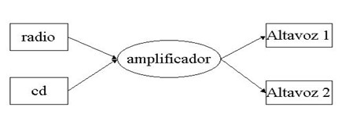
10.4 Fiabilidad de sistemas
En este apartado, vamos a relacionar la fiabilidad de un sistema con las fiabilidades de sus componentes. Estudiaremos métodos para obtener de forma exacta la fiabilidad de un sistema, pero como esto es difícil y a veces imposible para sistemas complejos, obtendremos en su lugar, útiles cotas en términos de los caminos mínimos y los cortes mínimos.
10.4.1 Fiabilidad de sistemas de componentes independientes
Supongamos que el estado de la \(i\)-ésima componente es una variable aleatoria binaria, es decir \[ X_i = \begin{cases} 1 & \text{con probabilidad } p_i\\ 0 & \text{con probabilidad } 1-p_i \end{cases} \]
donde 1 y 0 corresponden a los estados de funcionamiento y fallo respectivamente de la componente \(i\)-ésima, y \(p_i\) es lo que se llama fiabilidad de la componente \(i\)-ésima. Ahora el vector estado del sistema \(X = (X_1,X_2,...,X_n)\), es un vector aleatorio y la función de estructura \(\phi(X)= \phi(X_1,X_2,...,X_n)\), es también una variable aleatoria binaria.
Se define la fiabilidad del sistema como la probabilidad de que \(\phi(X)=1\), es decir \[ R=P\{\phi(X)=1\}=E[\phi(X)] \]
Si se supone que todas las componentes son mutuamente independientes, por tanto, la distribución conjunta de \(X_1,X_2,...,X_n\) está completamente determinada por las fiabilidades \(p_1,p_2,...,p_n\), \(R = R(p_1,p_2,...,p_n) = R(\textbf{p})\).
10.4.1.1 Ejemplo: Sistema en serie
Recordamos que la función estructura de un sistema en serie viene dada por \(\phi(\textbf{X})=\displaystyle\prod_{i=1}^n X_i\)
Si tomamos esperanza tendríamos \(R(\textbf{p}) = E[\phi(\textbf{X})] = \displaystyle\prod_{i=1}^n E[X_i] = \displaystyle\prod_{i=1}^n p_i\)
Dado que \(p_i\leq 1\), se tiene que \(R \leq p_i\) para todo \(i\), es decir, la fiabilidad del sistema es menor que la de cualquiera de sus componentes individual.
10.4.1.2 Ejemplo: Sistema en paralelo
Por su parte, la función estructura de un sistema en paralelo es \(\phi(x)=1-\displaystyle\prod_{i=1}^n (1-x_i) = \displaystyle\coprod_{i=1}^n x_i\)
Tomando esperanza \(R(\textbf{p}) = E[\phi(\textbf{X})] = 1-\displaystyle\prod_{i=1}^n E[1-X_i] = 1-\displaystyle\prod_{i=1}^n (1-p_i)\)
Dado que \(p_i\leq 1\), se puede comprobar que \(R \geq p_i\) para todo \(i\), es decir, la fiabilidad de una estructura en paralelo es mayor que la de cualquiera de sus componentes individuales.
10.4.1.3 Ejemplo: Sistema \(k/n\) con componentes idénticas
Sea un sistema \(k/n\) cuyas componentes tienen fiabilidades \(p_i = p\) para todo \(i\). El sistema funciona si al menos \(k\) de las \(n\) componentes funcionan, la función de fiabilidad viene dada por \(R(p)=\displaystyle\sum_{m=k}^{n} {n \choose m} p^m(1-p)^{n-m}\)
El siguiente resultado establece que un sistema monótono será más fiable cuanto mayores sean las fiabilidades de sus componentes.
Teorema. Sea \(R(\textbf{p})\) la fiabilidad de un sistema monótono de componentes independientes. Entonces \(R(\textbf{p})\) es una función creciente de \(\textbf{p}=( p_1,p_2,...,p_n)\).
10.5 Tiempo de vida del sistema
Hasta ahora, todos nuestros cálculos de fiabilidad eran estáticos, es decir el factor tiempo no era tenido en cuenta. A partir de ahora vamos a estudiar la fiabilidad de un sistema como función del tiempo, para ello establecemos las siguientes hipótesis:
H1. La componente \(i\)-ésima tiene tiempo de vida \(T_1\), con función de distribución conocida, \(F_i(t)\) para todo \(i=1,2,...,n\), \(P\{T_i < 0\}=0\).
H2. Una componente que falla no es renovada o reparada. Si falla permanece en ese estado para siempre.
Bajo estas condiciones, se define una variable aleatoria binaria \(X_1(t)\) de la siguiente forma \[ X_i(t) = \begin{cases} 1 & \text{si } T_i>t\\ 0 & \text{si } T_i\leq t \end{cases} \]
es decir vale 1 si la componente \(i\)-ésima está funcionando después del tiempo \(t\). Entonces, a partir de ahora, el vector de estado del sistema en el tiempo \(t\) viene dado por \(X(t)=(X_1(t), X_2(t),..., X_n(t))\), es un vector aleatorio que depende del tiempo.
Definición. Se define el tiempo de vida del sistema, \(T\), como el menor tiempo que hace que la función de estructura valga 0, es decir el tiempo en el que ocurre el primer fallo del sistema, \[ T=\inf\{t:\phi(\textbf{X}(t))=0\} \]
Teorema. Sea \(R(\textbf{p})=E[\phi(\textbf{X})]\) la fiabilidad de un sistema monótono, y sea la siguiente función \[ R(t)=r(\overline{F}_1(t),\overline{F}_2(t),...,\overline{F}_n(t)), \]
donde \(\overline{F}(t) = P\{T_i > t\}\) para todo \(i=1,2,....,n\). Entonces la probabilidad de que el tiempo de vida del sistema, \(T\), exceda a \(t\), es decir \(\overline{F}(t)\), es igual a \(R(t)\).
10.5.0.1 Ejemplo. Sistema en serie
Supongamos un sistema formado por \(n\) componentes, donde el funcionamiento del sistema depende del funcionamiento de todas las componentes, si una falla, el sistema falla. La fiabilidad de un sistema de este tipo viene dada por \(R(\textbf{p})=\displaystyle\prod_{i=1}^{n} p_i\).
Aplicando el teorema anterior, obtenemos \[ \overline{F}(t)=R(\overline{F}_1(t),\overline{F}_2(t),\dotsc,\overline{F}_n(t))=\displaystyle\prod_{i=1}^{n} \overline{F}_i(t)= \displaystyle\prod_{i=1}^{n}[1-F_i(t)] \]
de modo que la función de distribución del tiempo de vida del sistema viene dada por: \[ F(t)=1-\displaystyle\prod_{i=1}^{n}[1-F_i(t)], \]
que es la función de distribución del mínimo de \(n\) variables aleatorias independientes. Entonces en el caso de un sistema en serie, \(T=\min\{T_1,T_2,...,T_n\}\), es decir, el tiempo de vida de un sistema en serie es el mínimo de los tiempos de vida de sus componentes.
10.5.0.2 Ejemplo. Sistema en paralelo
Se supone un sistema formado por \(n\) componentes que falla cuando fallen todas las componentes, y funciona si al menos una de ellas está en funcionamiento. La fiabilidad de este sistema viene dada por: \(R(\textbf{p})=1-\displaystyle\prod_{i=1}^{n} (1-p_i)\).
Utilizando el teorema llegamos a la siguiente expresión para la función de distribución del tiempo de vida del sistema \[ F(t)=\displaystyle\prod_{i=1}^{n} F_i(t), \]
que es la función de distribución del máximo de \(n\) variables aleatorias independientes, \(T=\max\{T_1,T_2,...,T_n\}\). El tiempo de vida de un sistema en paralelo es el máximo de los tiempos de vida de sus componentes.
10.5.0.3 Ejemplo. Sistema \(k/n\) con componentes idénticas
El sistema funciona si al menos \(k\) de las \(n\) componentes funcionan. La función de fiabilidad viene dada por \(R(p)=\displaystyle\sum_{m=k}^{n} {n \choose m} p^m(1-p)^{n-m}\)
Aplicando nuevamente el teorema, \[ F(t)=\displaystyle\sum_{i=n-k+1}^{n} {n \choose i} (G(t))^{i}(1-G(t))^{n-i}, \]
que puede entenderse como la función de distribución del estadístico ordenado de orden \(n-k+1\), es decir \(T_{n-k+1}\). \(G\) representa la función de distribución común a todas las \(T_i\).
10.5.0.4 Ejemplo. Obtención del tiempo de vida del sistema mediante descomposición modular
Consideremos el sistema del siguiente diagrama
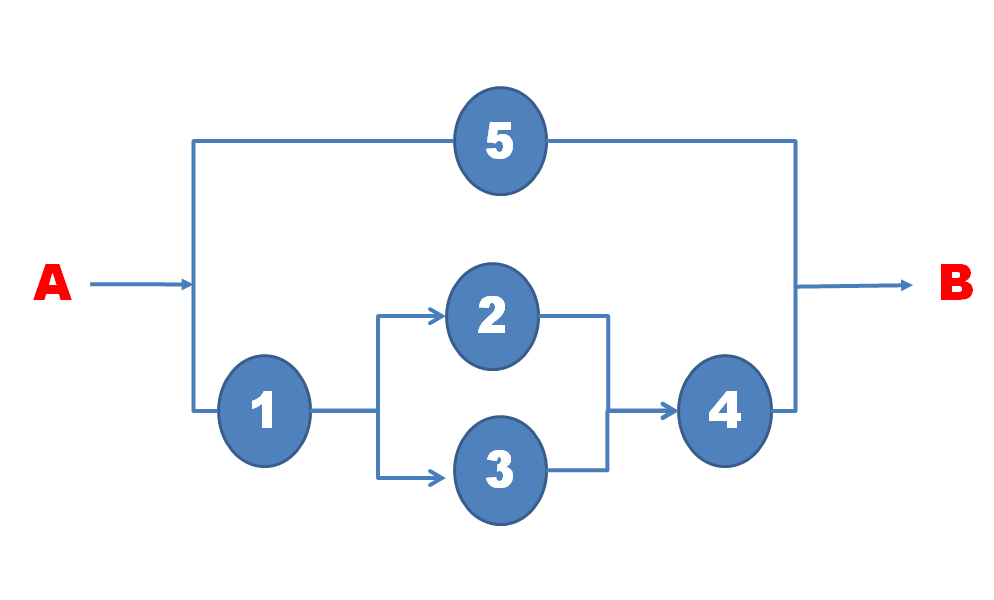
En este caso el tiempo de vida del sistema se obtiene de la siguiente forma \[ T=\max\{T_5,\min\{T_1,T_4,\max\{T_2,T_3\}\}\} \] cuya función de distribución es \[ F=F_4F_5+F_2F_3F_5-F_2F_3F_4F_5+F_1F_5-F_1F_4F_5-F_1F_2F_3F_5+F_1F_2F_3F_4F_5. \]
10.6 Medidas de importancia de una componente
La importancia de la fiabilidad de una componente depende de dos factores fundamentales
- localización de la componente dentro del sistema
- valor de la fiabilidad de la componente en cuestión
En cualquier caso, sería de gran utilidad, valorar toda esta información de alguna manera para tener una medida cuantitativa de la importancia de cada componente. Esta medida debería, por ejemplo, identificar las componentes que, siendo mejoradas, incrementarían al máximo la fiabilidad del sistema, o bien, establecer un orden, en la etapa de reparación del sistema, según el cual inspeccionar las componentes con objeto de determinar cuáles de ellas podrían haber causado el fallo del sistema.
Existen numerosas formas de medir la importancia de una componente.
Consideremos un sistema con \(n\) componentes, sea \(p_i(t)\) la fiabilidad de la componente \(i\)-ésima en el tiempo \(t\), para \(i=1,2,...,n\). Sea \(R(\textbf{p}(t)) = (p_1(t), p_2(t),..., p_n(t))\) la función de fiabilidad del sistema en el tiempo \(t\).
10.6.1 Medida de importancia de Birnbaum (\(I^{B}\))
La medida de Birnbaum se obtiene como la derivada parcial de la función de fiabilidad con respecto a \(p_i(t)\) \[ I^B(i|t)=\dfrac{\partial R(\textbf{p}(t))}{\partial p_i(t)} \]
Si \(I^B(i|t)\) es grande, un pequeño cambio en la fiabilidad de la componente \(i\) infiere un gran cambio en la fiabilidad del sistema en el tiempo \(t\). Usando la descomposición pivotal de la función de fiabilidad, tendríamos la siguiente expresión equivalente
\[ I^B(i|t)=R(1_i;\textbf{p}(t))-R(0_i:\textbf{p}(t)). \]
Como la función de estructura del sistema toma sólo valores 1 y 0, esta diferencia se puede expresar \[ I^B(i|t)=P\{\Phi(1_i;\textbf{X}(t))-\Phi(0_i;\textbf{X}(t))=1\}, \]
esto es, esta medida da la probabilidad de que \((1_i;\textbf{X}(t))\) sea un vector camino crítico para la componente \(i\) en el instante \(t\), esto es \(\Phi(1_i;\textbf{X}(t)) = 1\), mientras que \(\Phi(0_i;\textbf{X}(t)) = 0\). Diremos en este caso que la componente \(i\) es crítica para el sistema, esto significa que dado el estado del resto de componentes, el sistema está funcionando si y sólo si la componente \(i\) funciona. Notemos que el hecho de que la componente \(i\) sea crítica para el sistema no dice nada acerca del estado de dicha componente, más bien concierne al estado del resto de componentes en el sistema. Así, en un sistema en serie, una componente resulta crítica para el sistema si el resto de componentes están operativas, ya que de otro modo, el estado de esta componente sería irrelevante. Del mismo modo, en un sistema en paralelo, una componente es crítica para el sistema únicamente en el caso de que todas las demás hayan fallado.
En otras palabras, la medida de Birnbaum de importancia de la componente \(i\) en el tiempo \(t\), es igual a la probabilidad de que el sistema.
10.6.2 Medida de importancia crítica (\(I^{CR}\))
Sea \(C(1_i; \textbf{X}(t))\) el suceso que indica que el sistema está en el tiempo \(t\) en un estado en el que la componente \(i\) es crítica. La probabilidad de este suceso es la medida de Birnbaum de dicha componente. Como las componentes en el sistema son independientes, este suceso es independiente del estado de la componente \(i\) en el instante \(t\). La probabilidad de que la componente \(i\) sea crítica para el sistema y simultáneamente esta componente esté no operativa en el tiempo \(t\) es por tanto \[ P[C(1_i;\textbf{X}(t))\cap\{X_i(t)=0\}]=I^B(i|t)(1-p_i(t)). \]
Definimos medida de importancia crítica de la componente \(i\) en el tiempo \(t\) a la probabilidad de que la componente \(i\) sea crítica para el sistema y que no esté operativa en el tiempo \(t\), dado que el sistema ha fallado en el tiempo \(t\). En otras palabras, esta medida nos da la probabilidad de que la componente \(i\) haya causado el fallo del sistema dado que este ha fallado en el tiempo \(t\). Cuando la componente \(i\) es reparada, el sistema volverá a funcionar de nuevo. \[ I^{CR}(i|t)=P[C(1_i;\textbf{X}(t))\cap\{X_i(t)=0\}|\Phi(\textbf{X}(t))=0]=\dfrac{I^B(i|t)(1-p_i(t))}{1-R(\textbf{p}(t))} \]
10.6.3 Medida de capacidad de mejora (\(I^{IP}\))
Consideremos un sistema con función de fiabilidad \(R(\textbf{p}(t))\), en ocasiones resulta interesante investigar el incremento producido en esta función de fiabilidad si una componente \(i\) es reemplazada por una componente perfecta, es decir \(p_i(t) = 1\). En este sentido definimos \[ I^{IP}(i|t) = R(1_i;\textbf{p}(t))-R(\textbf{p}(t)). \]
La relación con las medidas anteriores sería
- \(I^{IP}(i|t)=I^{B}(i|t)(1-p_i(t))\)
- \(I^{IP}(i|t)=I^{CR}(i|t)(1-R(\textbf{p}(t)))\)
10.6.4 Comparación de medidas
Para comparar estas medidas, sugerimos, en primer lugar evaluar todas ellas aplicándolas a sistemas clásicos como sistema en serie, sistema en paralelo y sistema \(k/n\). Considerar \(k = 2\) y \(n = 3\).
Cuando analizamos un sistema concreto, deberíamos elegir la medida más interesante para los propósitos particulares de cada caso. Si estamos interesados en identificar la componente que debiera ser mejorada para incrementar la fiabilidad del sistema, las más apropiadas son \(I^B\) y \(I^{IP}\). Por otra parte, si lo que buscamos es identificar aquella componente que tiene la mayor probabilidad de causar el fallo del sistema, la medida más apropiada es \(I^{CR}\).
10.7 Redundancia
En algunas estructuras, el funcionamiento de unidades simples (componentes o subsistemas) puede ser de mucha más importancia para la capacidad del sistema que en otras. Por ejemplo, si una unidad simple está dispuesta en serie con el resto del sistema, el fallo de esa componente implica el fallo del sistema. Hay dos formas de aumentar la fiabilidad del sistema en tales situaciones,
usar unidades muy altamente fiables en los lugares críticos del sistema, o
introducir redundancia en esos puestos, es decir introducir una o más unidades de reserva.
El tipo de redundancia obtenida reemplazando la unidad importante por dos o más unidades funcionando en paralelo, se llama redundancia activa.
Las unidades en reserva pueden mantenerse en standby, es decir, la primera de ellas es activada cuando la que está operativa falla, si las unidades en reserva se mantienen de forma que no es posible el fallo durante el periodo de inactividad, tenemos lo que se llama redundancia pasiva.
A veces la unidad en standby soporta cierta carga de manera que es posible que falle durante el periodo de “inactividad”, entonces se habla de redundancia parcialmente cargada.
Teorema. Sea una función de estructura \(\Phi\). Sea \(S\) el sistema obtenido disponiendo en paralelo \(k\) módulos idénticos con estructura \(\Phi\). Sea \(C\) el sistema obtenido reemplazando dada componente de la estructura \(\Phi\) por \(k\) componentes idénticas en paralelo. Entonces, si la estructura \(\Phi\) es monótona, los sistemas \(S\) y \(C\) tienen función de estructura monótona y la fiabilidad de \(C\) es mayor o igual que la de \(S\).
Nota: Este resultado, que damos sin demostración, justifica que a efectos de la fiabilidad del sistema, redundancia en componentes es superior a redundancia en estructura. Como ilustración vemos el siguiente ejemplo.
10.7.0.1 Ejemplo
Supongamos un montaje serie/paralelo, con componentes con igual fiabilidad de valor \(p\), \(0 < p < 1\), como el de la siguiente figura
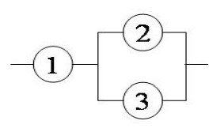
El sistema \(S\), redundancia en estructura, vendría dado por el diagrama siguiente
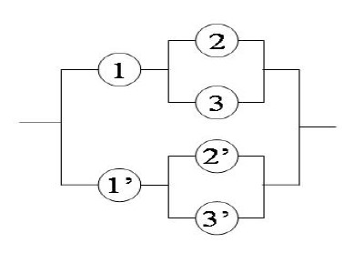
Llamemos \(R_1(p)\) a la función de fiabilidad de este sistema, que podemos obtener fácilmente, \(R_1(p) = 4p^2 -2p^3 - 4p^4 + 4p^5 - p^6\).
Por su parte la estructura obtenida duplicando en componentes resulta en el siguiente diagrama,
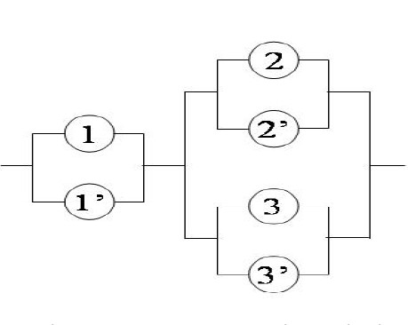
La correspondiente función de estructura vendría dada por \(R_2(p) = 8p^3 - 12p^4 + 6p^5 - p^6\). Para comprobar el resultado del Teorema en este ejemplo presentamos la siguiente gráfica, que contiene conjuntamente las funciones de fiabilidad \(R_1\) y \(R_2\), y donde puede comprobarse que para cualquier valor de \(p\), la primera estructura es más ventajosa.
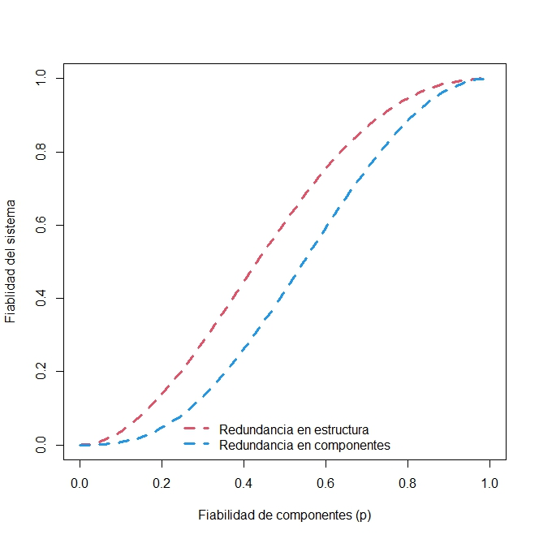
10.7.0.2 Ejemplo: Redundancia activa:
- Montaje serie-paralelo
Tenemos \(n\) conjuntos de componentes montadas en serie y estas a su vez están formadas por \(p\) componentes conectadas en paralelo. Es decir, introducimos redundancia activa en cada una de las componentes. Vamos a llamar a cada subsistema en paralelo una etapa del sistema.
En este caso podemos definir las siguientes funciones binarias: \[ x_{ij}(t) = \begin{cases} 1 & \text{si la componente } ij \text{ está funcionando (con prob. $p_{ij}$)}\\ 0 & \text{en otro caso (con probabilidad $1-p_{ij}$)} \end{cases} \]
\(\forall i\in\{1,2,\dotsc,p\}\) y \(\forall j\in\{1,2,\dotsc,n\}\). Puede considerarse una extensión del esquema anterior en el sentido de que el número de componentes en reserva no tiene que ser el mismo para todas las etapas del sistema. Si fuese así, definimos \(x_{ij}\), \(\forall i\in\{1,2,\dotsc,p\}\) y \(\forall j\in\{1,2,\dotsc,n\}\), pero si en la posición \(ij\) no existe ninguna componente, \(p_{ij}\) debe ser igual a 0.
La fiabilidad es el producto de las fiabilidades de cada etapa (ya que es en serie) y cada etapa es una estructura en paralelo, entonces: \[ R(t) = \displaystyle\prod_{j=1}^{n}[1-\displaystyle\prod_{i=1}^{p}(1-R_{ij}(t))], \]
donde \(R_{ij}(t)\) representa la fiabilidad del \(j\)-ésimo elemento \((j=1,2,...,n)\) en la etapa \(i\)-ésima \((i=1,2,...,p)\).
Si \(\tau_1\) es el tiempo de vida del sistema serie-paralelo, y \(T_{ij}\), el tiempo de vida de la componente \(ij\), tenemos que \[ \tau_1 = \min\{\text{tiempos de vida de los } n \text{ conjuntos de componentes}\} \] \[ =\min\{\max\{T_{11},...,T_{p1}\},\max\{T_{12},...,T_{p2}\},\dotsc,\max\{T_{1n},...,T_{pn}\}\}. \]
- Montaje paralelo-serie
Tenemos \(n\) componentes montadas en serie y estas a su vez están montadas en paralelo con otras \(n\) componentes montadas en serie, y así sucesivamente hasta un número finito que llamaremos \(p\). En este caso estamos introduciendo redundancia activa en todo el sistema.
Ahora tenemos p ramas en serie, con n elementos cada una, luego la función de fiabilidad es \[ R(t) = 1-\displaystyle\prod_{i=1}^{p}[1-\displaystyle\prod_{j=1}^{n}(R_{ij}(t))], \]
Si \(\tau_2\) el tiempo de vida del sistema paralelo-serie, entonces: \[ \tau_2 = \max\{\text{tiempos de vida de cada una de las } n \text{ componentes}\} \] \[ =\max\{\min\{T_{11},...,T_{1n}\},\min\{T_{21},...,T_{2n}\},\dotsc,\min\{T_{p1},...,T_{pn}\}\}. \]
Vamos a ver que \(\tau_1\geq\tau_2\), lo que significa que cuando hay redundancia activa, un montaje serie-paralelo es al menos tan bueno como un montaje paralelo-serie. Se puede comprobar las siguientes desigualdades
\[ \left. \begin{array}{rcl} \tau_2\leq\max\{T_{11},T_{21}\dotsc,T_{p1}\} \\ \tau_2\leq\max\{T_{12},T_{22}\dotsc,T_{p2}\} \\ .......................................... \\ \tau_2\leq\max\{T_{1n},T_{2n}\dotsc,T_{pn}\} \end{array} \right\} \]
entonces, por definición de mínimo, se tiene que \(\tau_2\leq\tau_1\), cqd.
10.7.0.3 Ejemplo: Redundancia pasiva
- Montaje serie-paralelo
Tiene la misma forma que el primer sistema considerado en el apartado anterior, con la diferencia de que en este sistema, las componentes paralelas no están todas en activo al mismo tiempo. Es decir consideramos redundancia pasiva en cada componente. El tiempo de vida del sistema viene dado en este caso por la siguiente expresión \[ \tau_1=\min\{T_{11}+T_{21}+\dotsc+T_{p1}, T_{12}+T_{22}+\dotsc+T_{p2},\dotsc,T_{1n}+T_{2n}+\dotsc+T_{pn}\}. \]
- Montaje paralelo-serie
La forma es la misma que en el anterior montaje paralelo-serie, con la diferencia de que las \(p\) componentes en paralelo no están activadas al mismo tiempo, se disponen según redundancia pasiva. Ahora el tiempo de vida del sistema es \[ \tau_2=\min\{T_{11},\dotsc,T_{1n}\}+\min\{T_{21},\dotsc,T_{2n}\}+\dotsc+\min\{T_{p1},\dotsc,T_{pn}\}. \]
También en este caso es fácil comprobar que \(\tau_2\leq\tau_1\).